Hyperblog
VHCreArt: Tu blog de Ilustración
Este es el título atractivo e interesante del post
Y este es el parrafo de inicio donde vamos a explicar las cosas increibles que pueden hacerse con ramas

Los blog son la mejor forma de compartir información y tus ideas. Mucho más que ir a conferencias o salir de Youtube. Excepto si eres rockstar. Pero estadísticamente no lo eres.... por ahora.
Que tus paredes cuenten historias...
Suscríbete y dale like